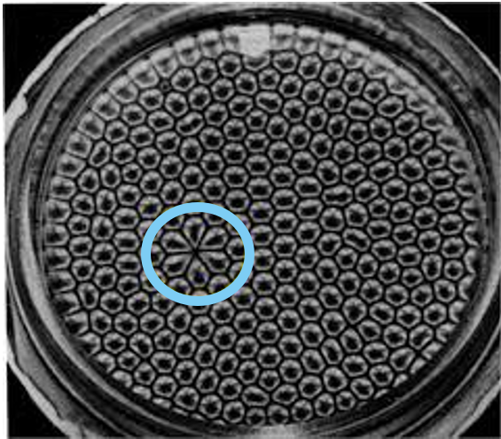
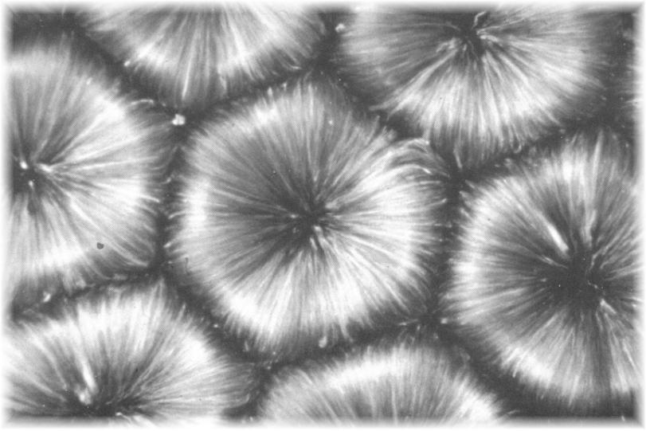

Under the right conditions, convection cells will take the shape of hexagons. Why don't we see hexagon-shaped clouds in the sky? Notice the small glitch in the pattern, it was later discovered that there was a tiny dent in the copper plate under the fluid. This tells us that the pattern is very sensitive to the bottom surface. Earth's surface has dents and bumps in the form of mountains, valleys, canyons, and more. All of these surface features affect the convection patterns in the atmosphere.

This picture shows a time lapse view of Rayleigh-Benard cells. The picture was taken over ten seconds, so the aluminum flakes in the fluid look like long trails instead of small particles. This helps to visulaize how the fluid is moving: up through the center of the cell, then spreading out and sinking at the edges of the cell.
1 Lu Yu, Bolin Hao & Xiaosong Chen. 2016. The Miracle at the Edge: Phase Transitions and Critical Phenomena.
2 Van Dyke, M. (1982) An Album of Fluid Motion. The Parabolic Press, Stanford.
3 NOAA Physical Sciences Laboratory. Rayleigh-Benard Convection Cells.
https://psl.noaa.gov/outreach/education/science/convection/RBCells.html